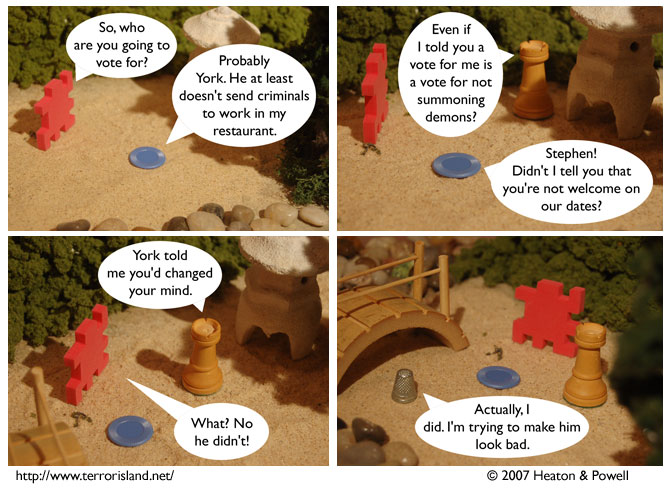

Strip #210
— Monday, October 15, 2007
This is why Jame and Liln prefer not to go on dates on days when the comic updates.
Notes, Thoughts, &c.
Ben’s Notes
Today’s Dr. McNinja is good from a humor point of view, but it mainly reminds me of the year (2003, maybe?) that I went without saying the word “bagel” to fulfill a new year’s resolution.
I really like that I can say it now. Bagel.
Lewis’s Notes
Q: What is the best food ever created by human hand?
A: Veggie Samosa.